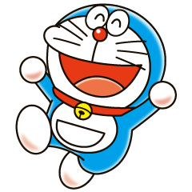

트랜스폼
페이지에서 요소를 변형시키는 함수
1. 지정한 크기만큼 좌/우 이동

2. 지정한 크기만큼 상/하 이동
3. 지정한 크기만큼 상하/좌우 이동
4. 지정한 크기만큼 좌/우 확대
5. 지정한 크기만큼 상/하 확대
6. 지정한 크기만큼 상하/좌우 확대
7. 지정한 각도만큼 회전
트랜지션
요소의 스타일 변화를 애니메이션처럼 변경
1. 시간에 따른 속성 변화
2. 시간 지연
애니메이션
애니메이션은 트랜지션과 마찬가지로 시작점, 끝지점 스타일을 정해서 자연스럽게 연결(중간단계설정 가능)